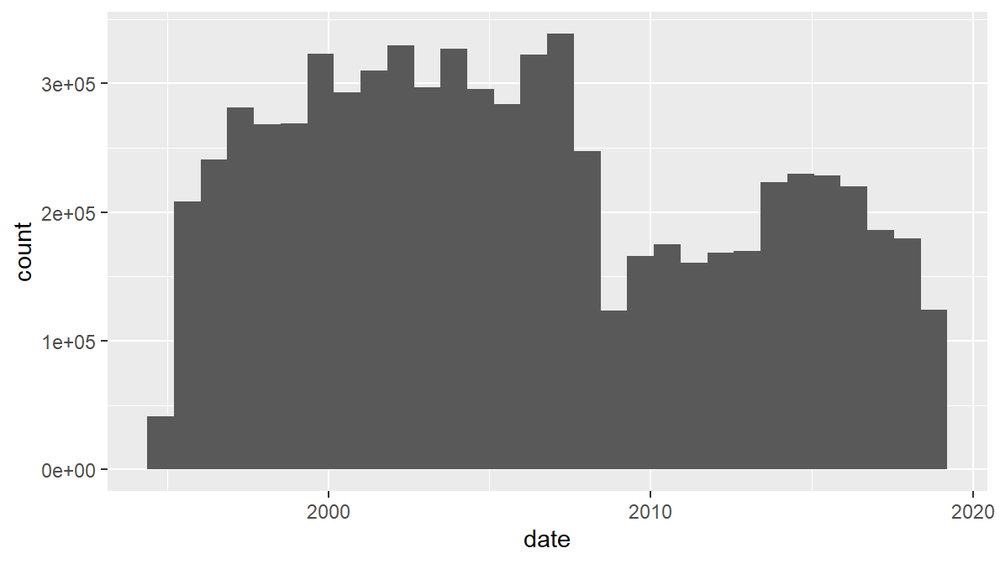

10 Using ggplot’s own stat functions
Now there’s a year column, we can start summarising the data for each year. Going back to the original question - what impact did the 2007/8 crash have on the housing market - we can start by asking:
What happened to the number of sales? To find this out, we can just count the number of sales per year.
As mentioned, one way to do this is to use ggplot’s own summarising functions. These can be a really useful way to quickly get an overview of the data.
For the plots done so far, all mappings have taken the variable’s value and mapped it directly to a value on the graph. Instead, ggplot stats create a summary variable first and then plot it.
This makes more sense when seen in practice. Here’s a simple bar chart: all it’s doing is counting the number of sales in each year:
ggplot(sales, aes(x = year)) +
geom_bar()
So it looks like, for these TTWAs, the number of sales halved after the crash and never recovered. As before, we can assign the TTWA to the bar colour - though this time it’s fill (‘colour’ is the bar outline). London has vastly more sales per year than any other TTWA.
ggplot(sales, aes(x = year, fill = ttwa)) +
geom_bar()
There are a few principles going on here:
- ggplot will use defaults where it can. In this case, we’ve not included a y-axis variable mapping in aes because the stat in geom_bar counts the number of observations in each year and so doesn’t need it. Indeed, if you try and give it a y variable, it will throw an error:
ggplot(sales, aes(x = year, y = price, fill = ttwa)) +
geom_bar()
- Some geometries use ggplot stats, others will plot your data directly. How to tell the difference?
- You’ll become familiar with the ones used for summary stats - on the cheatsheet, a lot of them are under one variable, discrete x, continuous y and continuous bivariate distribution. We’ll cover some more in a moment.
- But there’s a principle at work: every geom has a stat. It’s just that some have stat = “identity”, telling them to plot the data directly. Take a look at the help for geom_bar:
?geom_barThe stat argument is actually telling the geom to use a specific stat function: these are all listed in the left bar of page 2 of the cheatsheet. In the help file for geom_bar, its stat function is also there: stat_count. These can actually be used interchangeably. Note that stat_count’s default geom is “bar”:
ggplot(sales, aes(x = year, fill = ttwa)) +
stat_count()Under usage, the help page lists all of geom_bar’s arguments: the ones given here are its defaults. These are the two most important:
- stat = “count”: tells geom_bar to count observations in each group
- position = “stack”: if there are groups, this tells geom_bar to stack them on top of each other. The cheatsheet lists these on page 2. We can override the default simply. For example, telling geom_bar to find the proportion of sales in each year by filling from top to bottom:
ggplot(sales, aes(x = year, fill = ttwa)) +
geom_bar(position = 'fill')
In comparison, look again at the help for geom_point, that we used to begin with:
?geom_pointIts default stat is “identity”: this mean it maps data points directly to the aesthetic.
Another principle here:
- We’ve said that ggplot will attempt to plot your data if it can, but certain geometries require certain types of data. As with geom_bar - it requires a categorical x variable, in this case we’ve given it each year.
If we’d wanted to plot a continuous x variable as a bar chart, there’s one under ‘one variable continuous’ on the cheat sheet. So say we wanted to use date directly, geom_histogram will put them into equal sized bins:
ggplot(sales, aes(x = date)) +
geom_histogram()## `stat_bin()` using `bins = 30`. Pick better value with `binwidth`.
There are a lot of different stat functions, each with their own default geoms. When first learning ggplot, it’s just a matter of getting to know them through use. ggplot’s help is really helpful! It’ll help for working out what default stats each of them uses.
We’ll come back to one or two of these later. For now, on to using dplyr to shape data for visualising: